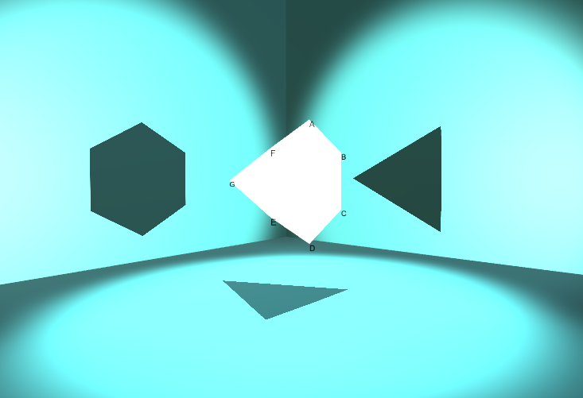
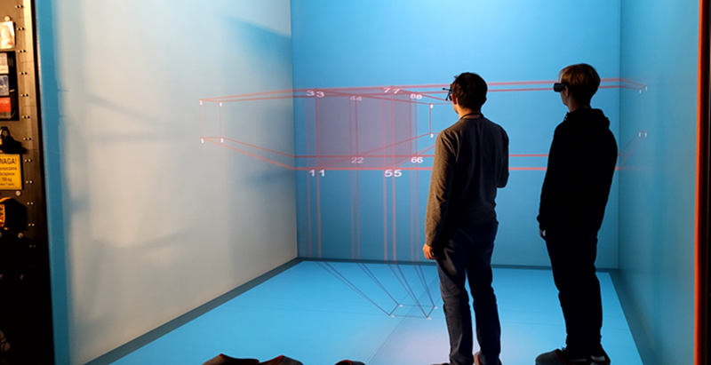
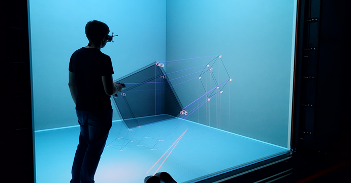

|
VR CAVE - Rzuty - Dokumentacja kodu
PRWP
|
| Nazwa / kod dokumentu: | Dokumentacja kodu – DK |
|---|---|
| Nr wersji: | 2.02 |
| Odpowiedzialny za dokument: | Mateusz Stencel |
| Data pierwszego sporządzenia: | 21.11.2023 |
| Data ostatniej aktualizacji: | 31.05.2024 |
Historia dokumentu
| Wersja | Opis modyfikacji | Autor modyfikacji | Data |
|---|---|---|---|
| 1.00 | zdefiniowanie szablonu dla dokumentu | Mateusz Stencel | 21.11.2023 |
| 1.01 | dodanie dokumentacji kodu za 1 semestr | Mateusz Stencel | 23.01.2024 |
| 2.01 | rozwinięcie dokumentacji w 2 semestrze | Mateusz Stencel | 31.03.2024 |
| 2.02 | dodanie dokumentacji kodu za 2 semestr | Mateusz Stencel | 31.05.2024 |
Projekt grupowy 2023-2024
Cel i zakres projektu
Celem projektu jest stworzenie aplikacji, która ułatwi studentom zrozumienie, jak powstają rzuty obiektów 3D na płaszczyznę i wyjaśni geometryczne metody rozwiązywania zadań w przestrzeni. Pomoże ona studentom odróżnić rzut środkowy od równoległego, aksonometrię od perspektywy oraz rozwinie wyobraźnię przestrzenną. Symulacje geometrycznych metod rzutowania obiektów przestrzennych na płaszczyznę rzutni. Wizualizacja tworzenia płaskich obrazów obiektów 3D w czasie rzeczywistym. Wizualizacja konstrukcji geometrycznych wykorzystywanych w badaniu wzajemnych relacji obiektów w przestrzeni.
Osiągnięte rezultaty w 1 semestrze
Po kliku spotkaniach z klientem udało się doprecyzować wizję tworzonej aplikacji. Powstał prototyp, umożliwiający importowanie dowolnych obiektów 3D zapisanych w autorskim formacie .wobj (mocno wzorowanym na .obj). Zaimportowane obiekty posiadają automatycznie podpisane wierzchołki (zgodnie z ich nazwami ustalonymi w pliku), które obracają się tak, by użytkownik zawsze mógł je odczytać. Możliwe jest także obracanie całym obiektem, w celu zaprezentowania jak podczas zmiany położenia obiektu zmieniają się jego rzuty na płaszczyzny (na ten moment rzuty reprezentowane są w postaci cieni).

Osiągnięte rezultaty w 2 semestrze
Po dwóch semestrach pracy udało się stworzyć aplikację z konkretną, dopracowaną wizją. Umożliwia ona importowanie dowolnych obiektów 3D i 2D zapisanych w autorskim formacie .wobj (mocno wzorowanym na .obj). Zaimportowane obiekty posiadają podpisane wierzchołki zgodnie z ich nazwami ustalonymi w pliku, które obracają się tak, by użytkownik zawsze mógł je odczytać. Możliwe jest także obracanie całym obiektem, w celu zaprezentowania jak podczas zmiany położenia obiektu zmieniają się jego rzuty na płaszczyzny. Użytkownik w każdym momencie ma możliwość włączenia i wyłączenia widoczności linii rzutujących i odnoszących. Widoczność każdego rzutu też może zostać włączona lub wyłączona. Istnieje także możliwość zdefiniowania własnych płaszczyzn rzutowania, definiując na istniejących już płaszczyznach dwa punkty, przez które przechodzić będzie nowa płaszczyzna. W razie potrzeby, użytkownik może także usunąć postawione przez siebie płaszczyzny.


Projekt dyplomowy inżynierski 2024-2025
Cel i zakres projektu
Celem projektu jest wykonanie aplikacji dla jaskiń rzeczywistości wirtualnej w Laboratorium Zanurzonej Wizualizacji Przestrzennej, które pozwolą na prezentację w przestrzeni trójwymiarowej zadanych płaszczyzn rzutni wraz z rzutami i następnie nadzorowane przez użytkownika odtworzenie wyglądu bryły. Aplikacja ta, dzięki współpracy z Wydziałem Architektury PG, powinna w przyszłości wspomóc kształtowanie wyobraźni przestrzennej u studentów uczęszczających na przedmiot „Geometria wykreślna”.